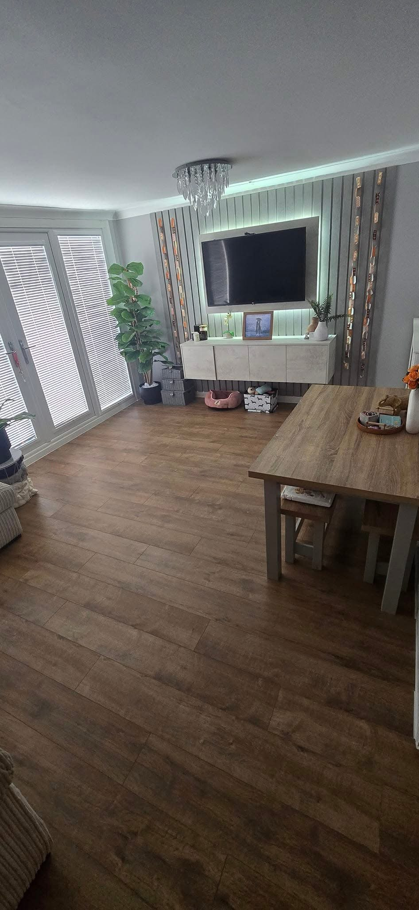
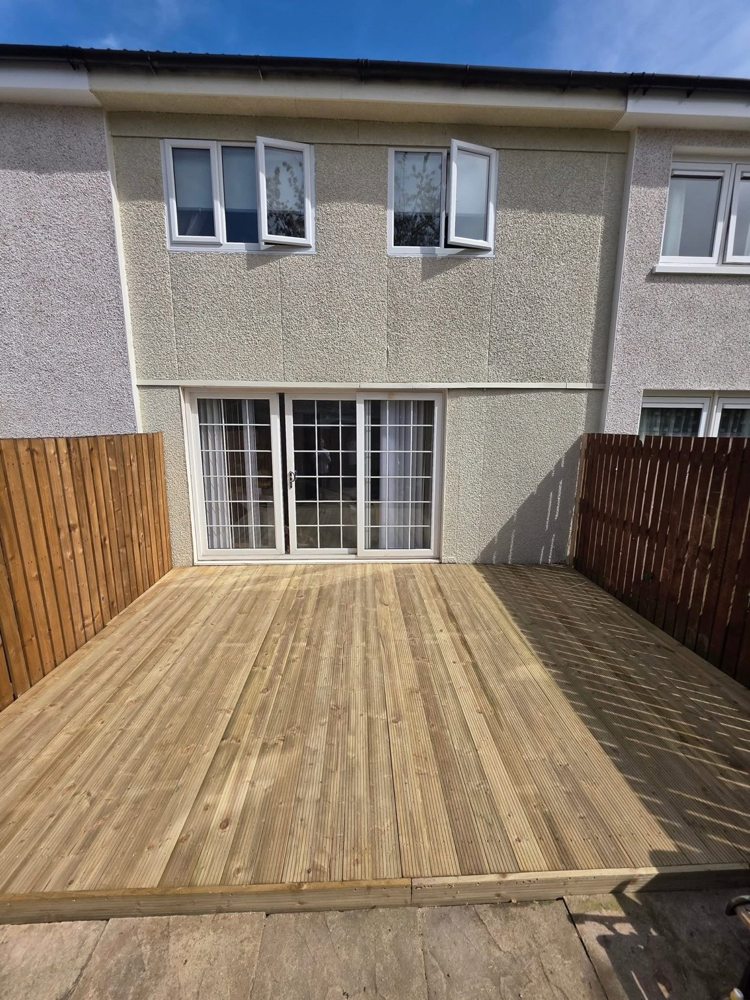
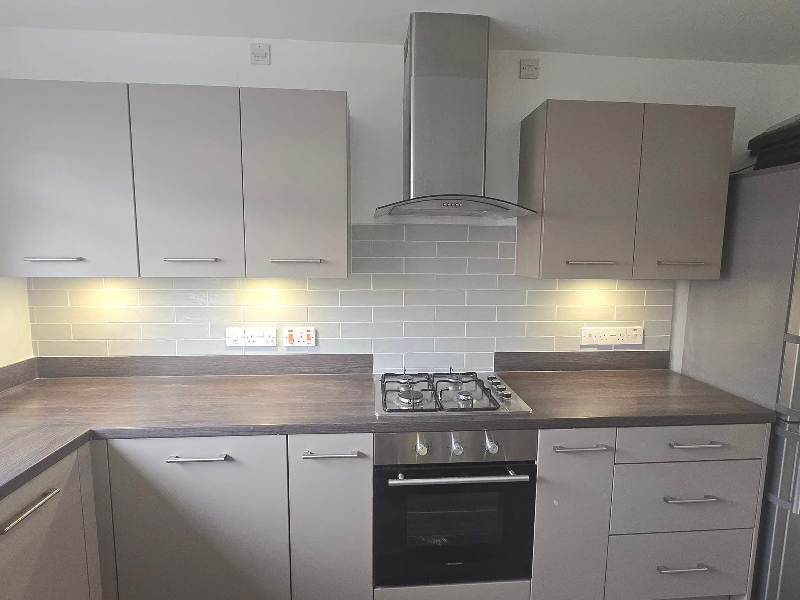
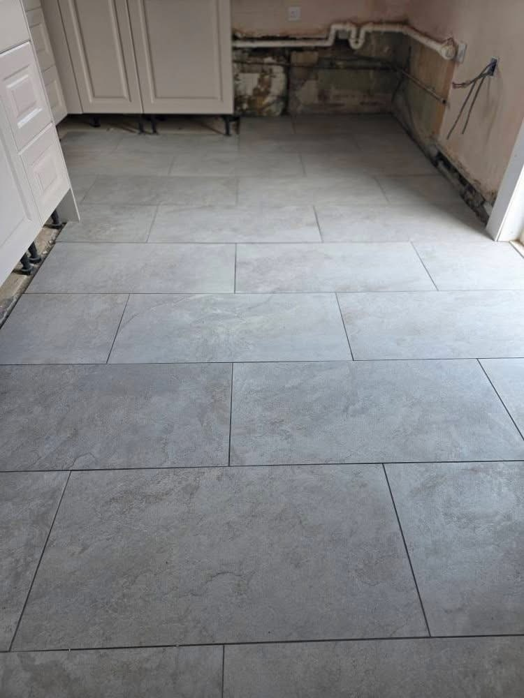
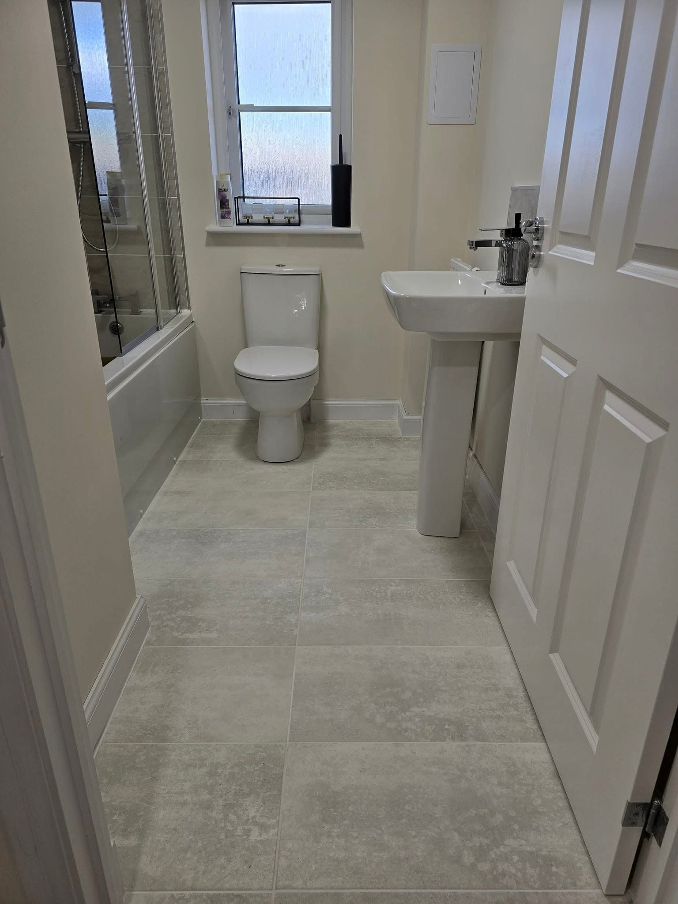
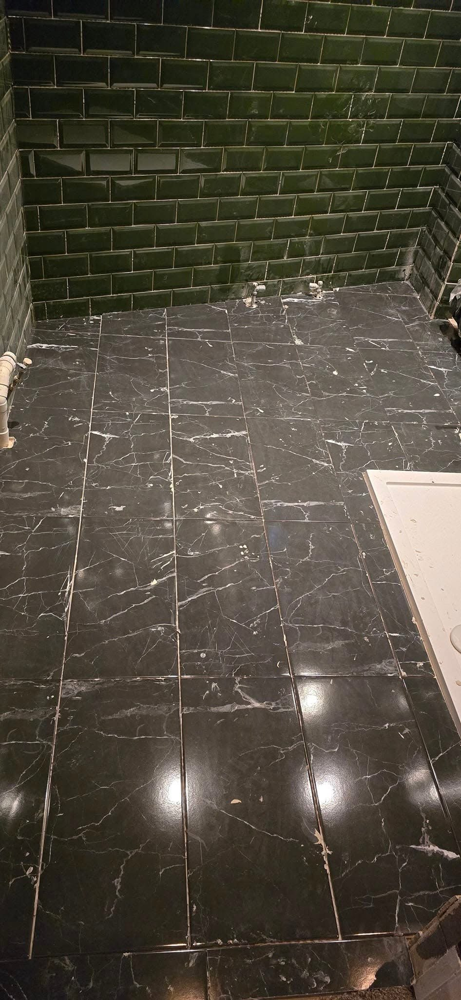
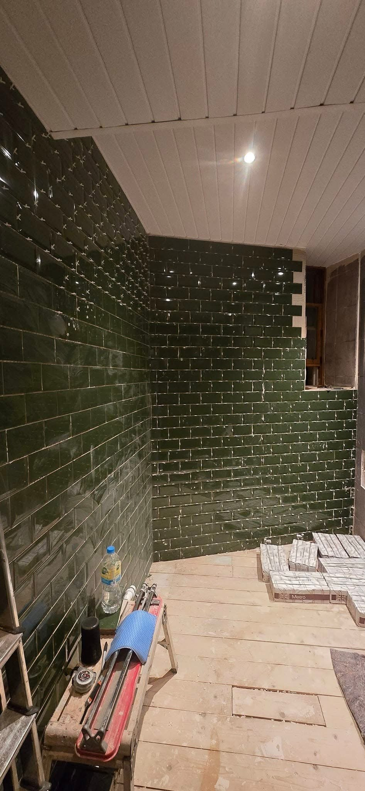
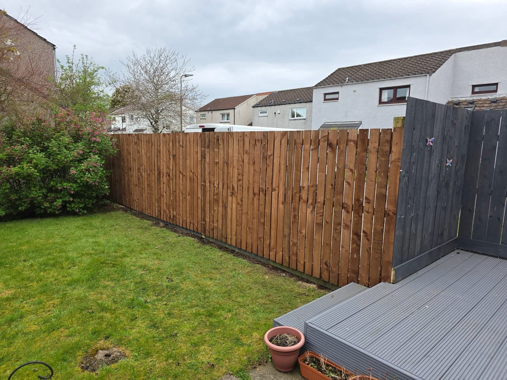

Flooring & Tiling in Livingston
Flooring & Tiling in Livingston
Flooring and tiling shape how a room looks and feels. KT Contracts’ Livingston portfolio includes large grey kitchen floor tiles, dark polished bathroom tiles, green wall tiling and a wood effect floor through an interior living space.
Plan around the room and adjoining spaces
Tell KT Contracts which room or rooms you want to change and what is currently on the floor or walls. Include the doorways, edges and transitions to other surfaces in your photographs so the full area is clear.
Share the finish you have in mind
The project images provide examples of different tile formats, colours and floor finishes. If you have a style or material in mind, include it in your enquiry alongside the postcode and details of the existing room.
Request a quote →

Fencing & decking & Patios & surfaces
Details that change a room.
Explore flooring and bathroom projects alongside outdoor work. Send your priorities and photos to discuss the improvements you want to make.
Discuss your project →

RECENT WORK
Flooring & Tiling in Livingston in pictures.
Interior flooring and tiling projects in Livingston from KT Contracts. Explore large floor tiles, bathroom tiling and wood effect floor finishes.



Livingston
Livingston property maintenance.
KT Contracts is a Livingston property maintenance contractor undertaking internal and external services. Get in touch with your postcode and a description of the work to start a conversation.
Room refurbishments and garden projects in one portfolio.
Finished work and refurbishment during construction.
Call, email or prepare your enquiry on WhatsApp.
GOOD TO KNOW
Your questions answered.
What flooring examples are in the gallery?
The photographs show large grey floor tiles, a dark bathroom floor and wood effect flooring through a living area.
Can I enquire about wall tiling too?
The portfolio includes green bathroom wall tiles during refurbishment. Describe the floor and wall work you want to discuss.
What information helps with an enquiry?
Include the room, postcode, existing surface and finish you want. Photos can be attached to the WhatsApp message after the form opens it.
REQUEST A QUOTE
Tell us what you have in mind.
Send the details of your project and its location. WhatsApp opens with your enquiry ready to send, where you can also attach photos.
KT Contracts
Ready to discuss your project?
Livingston